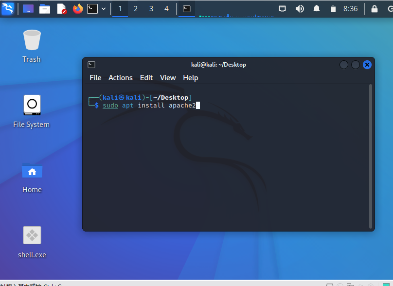
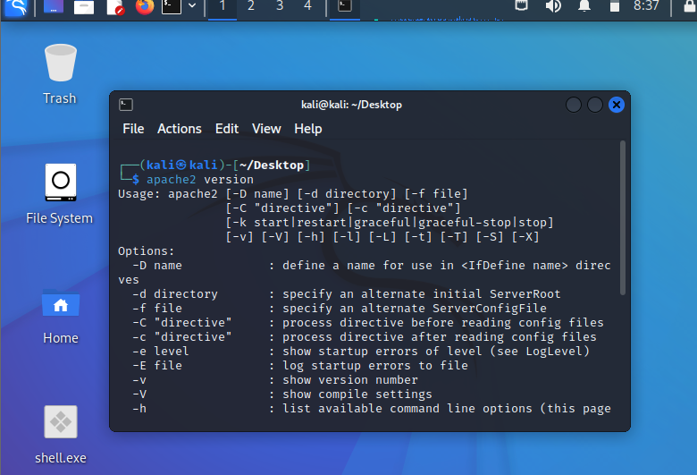
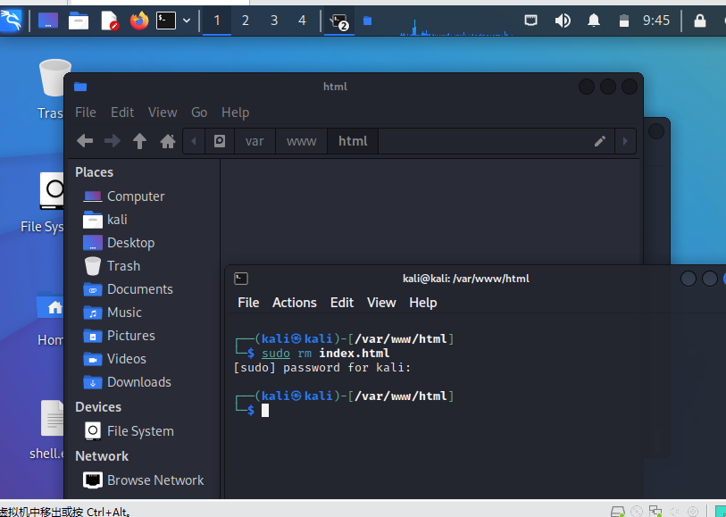
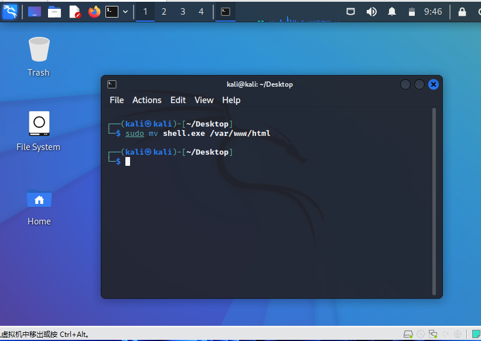
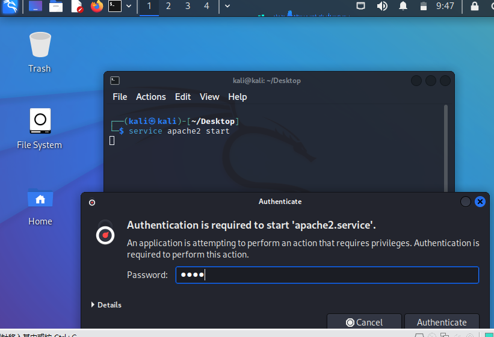
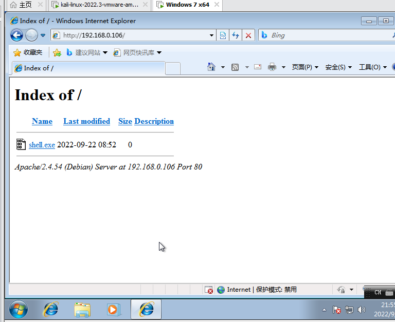

首先安装apache服务,终端输入sudo apt install apache2(kali自带)

安装完成后可通过apache2 version查看版本信息

首先进入/var/www/html路径，删除其中的内容
可通过rm命令删除需要删除的文件,选择后输入密码点击回车

通过mv命令将生成的被控端文件移动到apache服务位置

终端输入service apache2 start启动apache服务
在弹出界面中输入密码
一般情况下,如果没报错就是启动成功了

在浏览器中输入kali的ip就可以访问内网网站了
点击shell.exe就可以下载文件了
